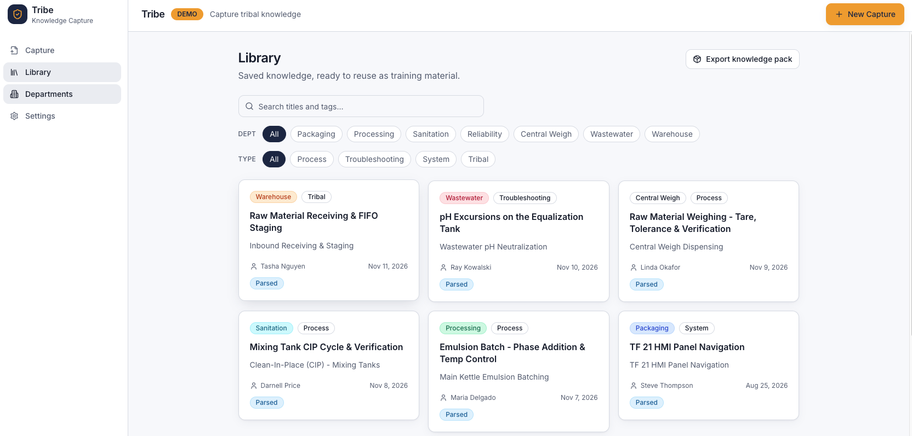

Tribe SME knowledge capture
Paste in a transcript from a subject matter expert. Get back three things a team can use the same day.

One transcript in
- Training guideObjectives, key terms, scenarios, and knowledge checks.
- How-toNumbered steps, in the order the work happens.
- Agent knowledgeA file any AI agent can load and recall from.
- The problem
- Critical know-how lived in the heads of a few experienced people. When they were busy, or gone, it was hard to teach and easy to lose.
- What I built
- A capture tool that logs each transcript to a searchable library across seven departments, then parses it into the three outputs above. The whole library exports as a knowledge pack.
- What changed
- One conversation with an expert becomes reusable training content. Anything the expert said unclearly is flagged for confirmation instead of guessed at.